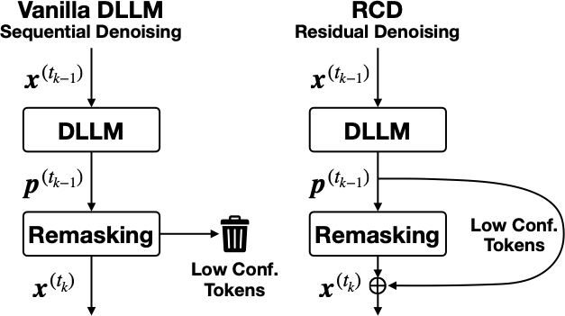
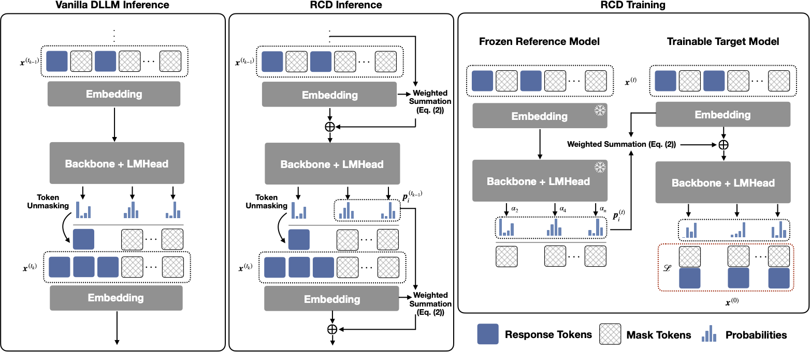
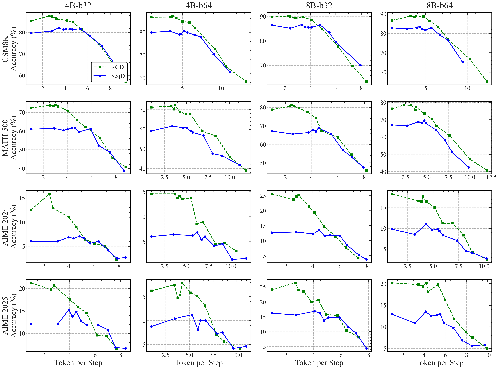

1University of California, Berkeley 2Apple
*Equal contribution †Joint advisement / Corresponding author

Figure 1: Overview of the residual denoising mechanism in Residual Context Diffusion (RCD). Remasking happens during each denoising step, discarding low-confidence token even though they are already explicitly computed. To recycle computation from previous steps, our proposed method extracts information before it is discarded, and forwards it to the next denoising step.
Example generation on AIME24. RCD increases parallelism by 4x while maintaining the baseline's peak accuracy.
Diffusion Large Language Models (dLLMs) offer parallel decoding benefits but often trail autoregressive models in accuracy. This is due to the "remasking" strategy which wastes intermediate computation on tokens that remain undecoded. We propose Residual Context Diffusion (RCD), a novel paradigm that transforms this wasted computation into a guiding signal. By treating latent representations of low-confidence tokens as residual updates, RCD allows models to progressively refine their knowledge. Our method achieves 5-10% gains on GSM8K/MATH500 and doubles accuracy on competition-level AIME benchmarks while requiring up to 5x fewer steps.
Diffusion LLMs (dLLMs) achieve high efficiency through parallel decoding, yet they consistently struggle to match the accuracy of Autoregressive (AR) models. While this gap is partly rooted in the inherent challenges of training dLLMs, it is further exacerbated by the inference-time "Remasking" strategy:
In each denoising step, standard dLLMs discard all tokens that fall below a confidence threshold, resetting them back to [MASK]. This wastes the intermediate computation spent on low-confidence tokens, forcing the model to "start from scratch" at those positions in the next step.
Instead of discarding uncertain tokens, RCD treats them as Residual Context. By aggregating these "soft tokens" based on their Entropy, we transmit a continuous, semantically-rich signal to the next iteration, enabling the model to refine its "thinking" rather than re-guessing.

Tokens not selected are reverted to static mask embeddings, discarding rich probability information.
Calculates a weighted sum of unselected distributions (residuals) to refine ambiguous tokens over time.
A Decoupled Strategy: A frozen Reference Model provides stable targets to train the Target Model's residual awareness.
RCD introduces an Entropy-Based Embedding Aggregation mechanism. Instead of discarding uncertain tokens, we calculate their normalized Shannon entropy to determine their contribution to the next step's input.

Pareto frontiers for SDAR models: Curves are generated by sweeping confidence thresholds from 0.5 to 1.0. Token per Step measures the average number of tokens generated in each parallel iteration; higher values indicate fewer total decoding steps.
If you find this work useful, please cite:
@misc{hu2026residualcontextdiffusionlanguage,
title={Residual Context Diffusion Language Models},
author={Yuezhou Hu and Harman Singh and Monishwaran Maheswaran and Haocheng Xi and Coleman Hooper and Jintao Zhang and Aditya Tomar and Michael W. Mahoney and Sewon Min and Mehrdad Farajtabar and Kurt Keutzer and Amir Gholami and Chenfeng Xu},
year={2026},
eprint={2601.22954},
archivePrefix={arXiv},
primaryClass={cs.CL},
url={https://arxiv.org/abs/2601.22954},
}